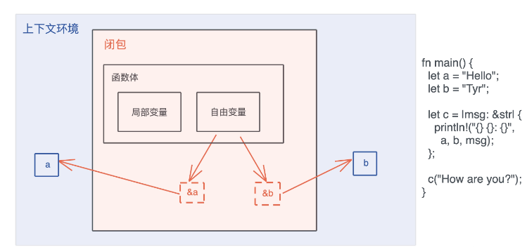
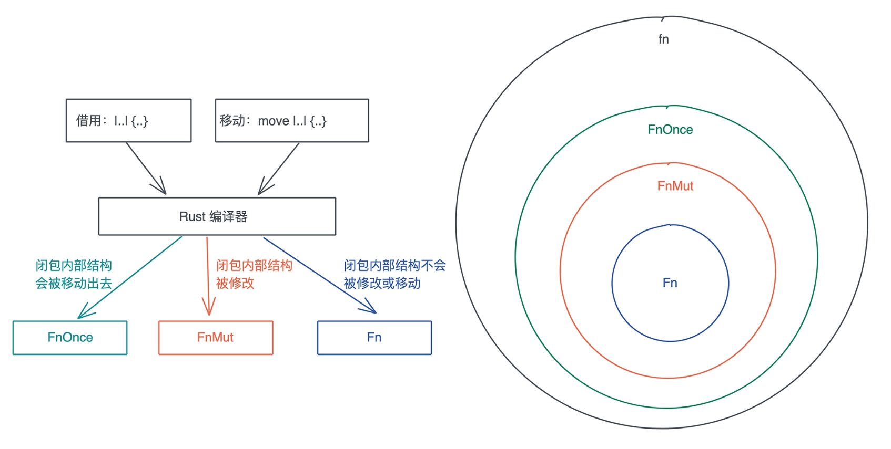

闭包(closure): FnOnce, FnMut, Fn
1. 闭包定义
闭包是将函数, 或者说代码和其环境一起存储的一种数据结构. 闭包引用的上下文中的自由变量, 会被捕获到闭包的结构中, 成为闭包类型的一部分
在 Rust 里, 闭包可以用 |args| { code } 来表述, 除了用引用来捕获自由变量之外, 还有另外一个方法使用 move 关键字 move |args| { code }
图中闭包 c 捕获了上下文中的 a 和 b, 并通过引用来使用这两个自由变量:

2. 闭包的本质
-
闭包是一种匿名类型, 一旦声明, 就会产生一个新的类型, 但这个类型无法被其它地方使用. 这个类型就像一个结构体, 会包含所有捕获的变量.
-
闭包的大小跟参数、局部变量都无关, 只跟捕获的变量有关.
-
闭包是存储在栈上, 并且除了捕获的数据外, 闭包本身不包含任何额外函数指针指向闭包的代码
-
闭包变量的所有权:
- 如果不使用
move转移所有权, 闭包会引用上下文中的变量, 这个引用受借用规则的约束, 所以只要编译通过, 那么闭包对变量的引用就不会超过变量的生命周期, 没有内存安全问题. - 如果使用
move转移所有权, 上下文中的变量在转移后就无法访问, 闭包完全接管这些变量, 它们的生命周期和闭包一致, 所以也不会有内存安全问题.
- 如果不使用
3. 闭包类型
FnOnce / FnMut / Fn 这三种闭包类型有什么区别.
3.1 FnOnce
#![allow(unused)] fn main() { pub trait FnOnce<Args> { type Output; extern "rust-call" fn call_once(self, args: Args) -> Self::Output; } }
FnOnce有一个关联类型, 这是闭包的返回值类型, 还有一个方法 call_once, 注意call_once第一个参数是self,它会转移self的所有权到call_once函数中.
这也是为什么FnOnce被称为 Once: 它只能被调用一次, 再次调用, 编译器将报变量已被 move 的所有权错误.
FnOnce 的参数, 是一个叫 Args 的泛型参数, 它并没有任何约束.
fn main() { let name = String::from("Tyr"); // 这个闭包啥也不干, 只是把捕获的参数返回去 // 这是一个FnOnce闭包 let c = move |greeting: String| (greeting, name); let result = c("hello".to_string()); println!("result: {:?}", result); // 无法再次调用 let result = c("hi".to_string()); }
3.2 FnMut
#![allow(unused)] fn main() { pub trait FnMut<Args>: FnOnce<Args> { extern "rust-call" fn call_mut(&mut self, args: Args) -> Self::Output; } }
FnMut“继承”了FnOnce, 所以FnMut也拥有Output这个关联类型和call_once这个方法. 此外, 它还有一个call_mut()方法. 注意call_mut()传入&mut self, 它不移动self, 所以FnMut可以被多次调用.FnMut“继承”了FnOnce, 所以, 一个FnMut闭包, 可以被传给一个需要FnOnce的上下文, 此时调用闭包相当于调用了call_once().
fn main() { let mut name = String::from("hello"); // 捕获 &mut name let mut c = || { name.push_str(" Tyr"); println!("c: {}", name); }; call_mut(&mut c); call_once(c); } // 在作为参数时, FnMut 也要显式地使用 mut, 或者 &mut fn call_mut(c: &mut impl FnMut()) { c(); } // 为啥 call_once 不需要 mut？ fn call_once(c: impl FnOnce()) { c(); }
3.3 Fn
#![allow(unused)] fn main() { pub trait Fn<Args>: FnMut<Args> { extern "rust-call" fn call(&self, args: Args) -> Self::Output; } }
Fn“继承”了 FnMut. 这也就意味着任何需要 FnOnce 或者 FnMut 的场合, 都可以传入满足 Fn 的闭包
fn main() { let v = vec![0u8; 1024]; // Fn, 不移动所有权 let mut c = |x: u64| v.len() as u64 * x; // Fn, 移动所有权 // let mut c = move |x: u64| v.len() as u64 * x; println!("direct call: {}", c(2)); println!("call: {}", call(3, &c)); println!("call_mut: {}", call_mut(4, &mut c)); println!("call_once: {}", call_once(5, c)); } fn call(arg: u64, c: &impl Fn(u64) -> u64) -> u64 { c(arg) } fn call_mut(arg: u64, c: &mut impl FnMut(u64) -> u64) -> u64 { c(arg) } fn call_once(arg: u64, c: impl FnOnce(u64) -> u64) -> u64 { c(arg) }
3.4 闭包使用场景
-
作为参数
-
作为函数返回值
-
为它实现某个
trait- 使其能表现出其他行为, 而不仅仅作为函数被调用. 比如有些接口既可以传入一个结构体, 又可以传入一个函数或者闭包.
#![allow(unused)] fn main() { pub trait Interceptor { /// Intercept a request before it is sent, optionally cancelling it. fn call(&mut self, request: crate::Request<()>) -> Result<crate::Request<()>, Status>; } impl<F> Interceptor for F where F: FnMut(crate::Request<()>) -> Result<crate::Request<()>, Status>, { fn call(&mut self, request: crate::Request<()>) -> Result<crate::Request<()>, Status> { self(request) } } }
Interceptor有一个call方法, 它可以让 gRPC Request 被发送出去之前被修改, 一般是添加各种头, 比如Authorization头.
4.总结
Rust 闭包的效率非常高. 首先闭包捕获的变量, 都储存在栈上, 没有堆内存分配. 其次因为闭包在创建时会隐式地创建自己的类型, 每个闭包都是一个新的类型. 通过闭包自己唯一的类型, Rust 不需要额外的函数指针来运行闭包, 所以闭包的调用效率和函数调用几乎一致.
